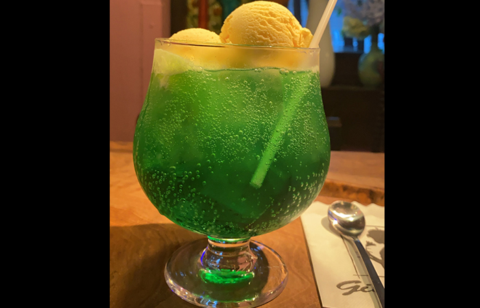
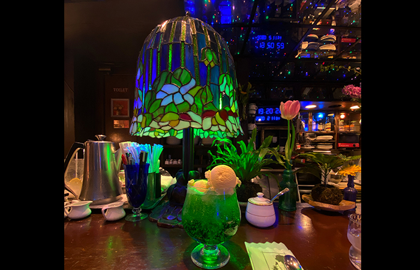
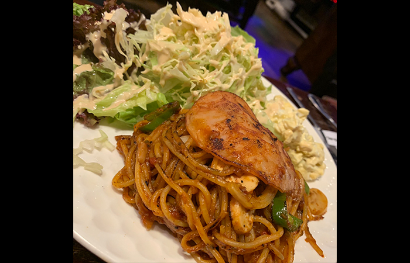
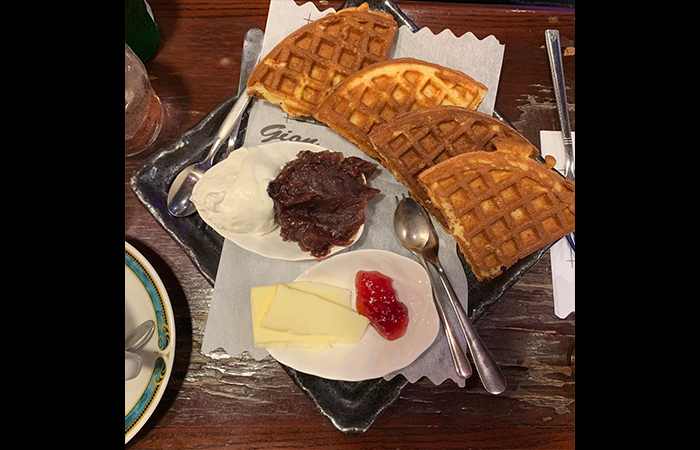
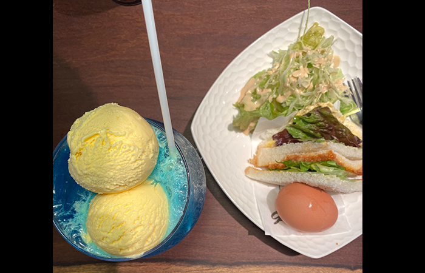
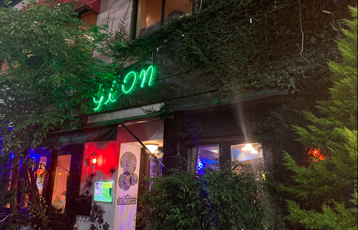

青のボリュームたっぷりクリームソーダが飲めるエモ喫茶、阿佐ヶ谷の秘宝Gionへ行ってみた
杉並区 阿佐ヶ谷駅 （JR中央線）
上京して初めて行った喫茶店、
元近所のGionさんを紹介をしたいと思います。
杉並区 阿佐ヶ谷にある純喫茶”Gion”
JR阿佐ヶ谷駅を出て徒歩１分のところにあります。
アクセスもいいので朝から夜まで多くのお客さんで賑わっていて
土日は外まで何組か並んでいることもあるほどの人気店！
その人気のポイントを考えてみました！
私がこれまで通っていて感じたポイントは大きく分けて３つです！
ポイント１はこの大きなクリームソーダ！
青色のクリームソーダもあって、２つ並べた時の可愛さは異常です。。
大きさと反比例してストローはとっても細いのでゆっくり楽しむことができます。
ソーダ水600円に＋300円のアイストッピングをしてクリームソーダが出てきます！
ポイント２つ目、座る場所によって変わる喫茶店の顔！
店内はピンクと青の２つのエリアに別れていて、
座った場所によって雰囲気がガラリと変わります！
（元々２つのエリアは喫煙と禁煙のエリアとして分かれていました。
ですが2022年には店内禁煙となっていました。
喫煙家の方にはとても残念なお知らせかと思います。。）
また朝と夜でも雰囲気が変わります。
朝の爽やかな雰囲気も好きだけど夜はバーのような雰囲気になって、これもまた可愛いです。
コロナになってから営業は自粛されてる期間もありましたが、
その間に「gionの夜」という名前で店舗の貸出をしてました。
可愛い写真を撮りに利用する方は多いみたいでSNSに載っているのを何度もみました！
私もぜひ貸切したい〜と思っていましたが、叶わぬうちに終わってしまいました涙
SNSはTwitterをやっていらっしゃいます。
喫茶店では珍しくSNSを取り入れているところも流石gionsさんだなと思います！
3つめのポイントは、ナポリタンとあんこホイップワッフル
gionsさんの料理はどれも美味しいですが、特に好きなのはこのナポリタン。
私的、喫茶店のナポリタン美味しいランキングでも上位に入ってくると思います！
私は最近はケチャップたっぷり甘めと言うよりかは、
若干焦げててピーマンもシャキシャキのこのナポリタンがとっても気分です。
あー書いてて食べたくなってきた。。
また、このワッフルもとっても美味しいです。
ワッフルって普段全然食べないけど、gionさんにくるとつい頼んでしまう。
他で比べるところがあまりないからわからないんですけど、私的にとっても美味しいです！
ポイントはこのあんことホイップとバターが添えられてくるところ！
ほとんどいちごジャムはつけずに終わります。
もう一つ、モーニングもあるので載せておきます。
モーニング 円
そしてもういいよって感じだと思うんですけど、まだ可愛いポイントがあります。。
これです！

そう、店内にあるブランコ！
椅子がブランコになってるんです。
マスター遊び心ありすぎ！
私も空いていればブランコを選んでしまいます、、
何歳になっても人はブランコが好きなんだな〜と思いました。
でも大抵先客がいるので、、運が良いと座れます！
お店の外観はこちら。
ネオンが可愛いですね。
と言うことでまとめると、
人気の阿佐ヶ谷gionさんの人気ポイント（私調べ）では
1.大きなグラスにたっぷりクリームソーダ
2.座る場所によって変わるgionの顔
3.ナポリタンとあんこホイップのワッフル
です！
もしまだ行ったことがない方がいらっしゃいましたら是非いてみてください！
絶対後悔はしないと思います！